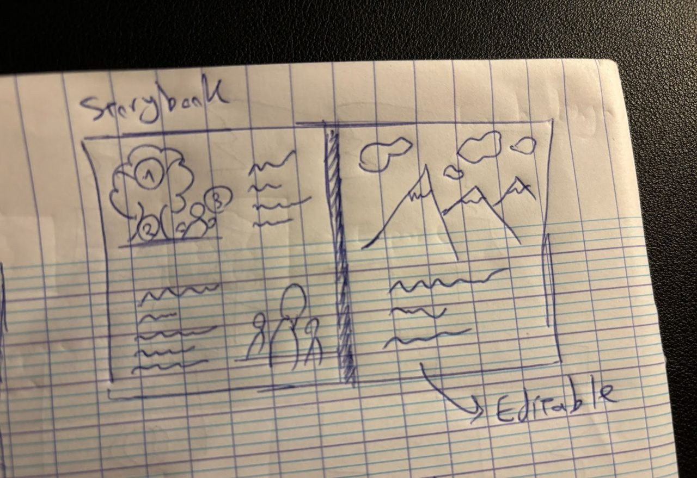
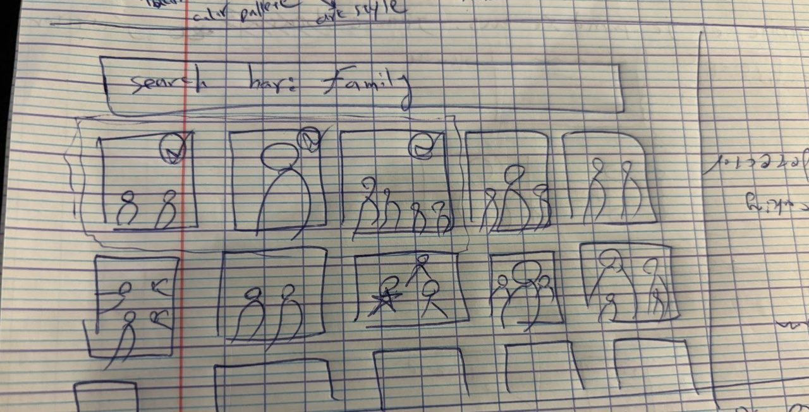
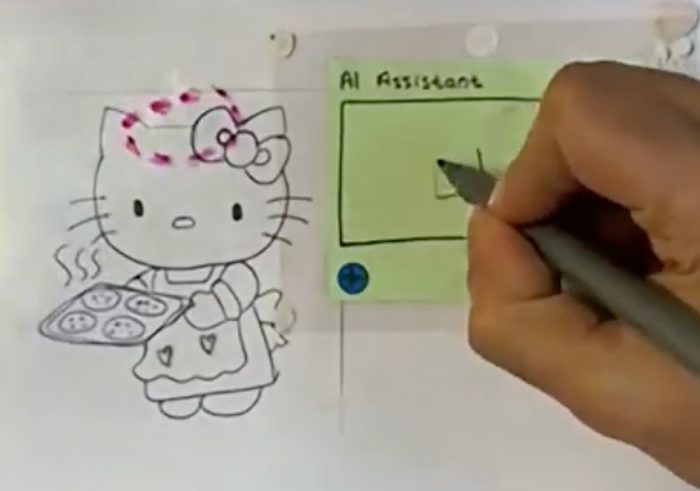
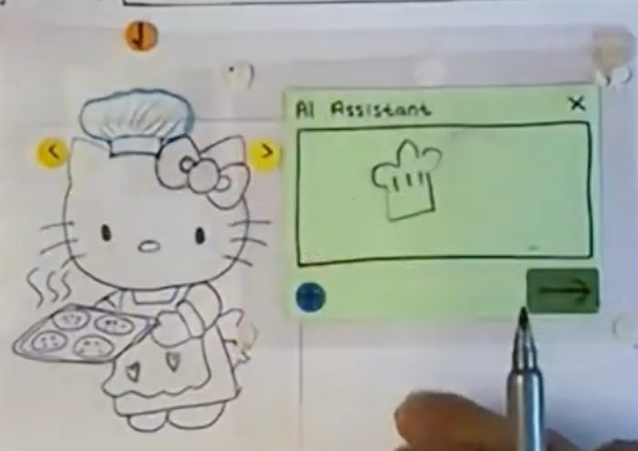
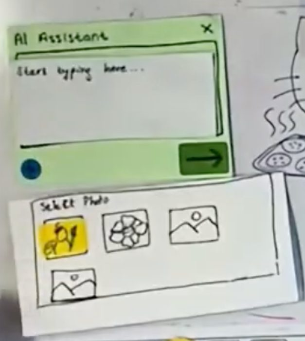
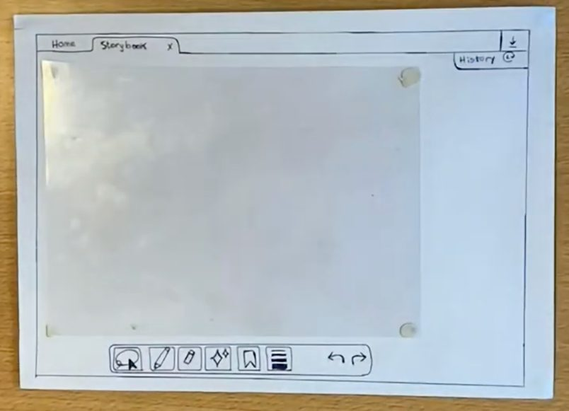
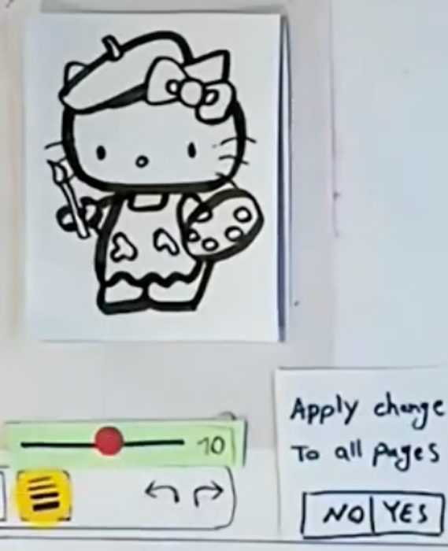
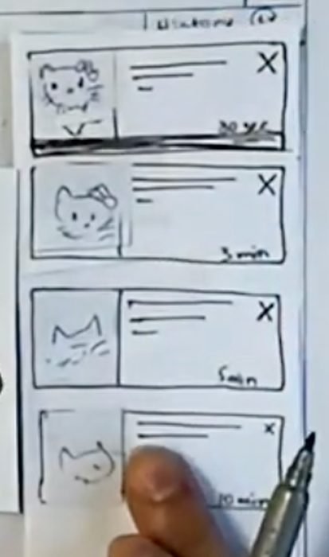

01 · The problem
Prompting a coloring page is a bad deal
We started from ColorifyAI, an existing text-to-coloring-page tool, and ran eight story interviews. The same frustrations kept surfacing.
- Words are a poor handle for a picture. "I say a pretty butterfly with wings, but I don't know how to be more specific than this."
- The output often isn't good to color. "The rose didn't look like a proper rose at all, it looked like an ugly mushroom."
- It takes many tries. People run the same prompt again and again until something sticks.
- People stop when they tire, not when it's good. "When did you decide the page was good enough? When I got tired."
- You can't edit the image once it exists. A small flaw means regenerating the whole page.
02 · The idea
A pen-based canvas, not a prompt box
Color-AI-t is a tablet app for people who color as a hobby, and for parents making custom pages for their kids. It still generates coloring-page outlines with AI, but the outline lands on a canvas you can draw on, and you can regenerate one part instead of the whole page. Input can be a text prompt, a sketch, or a photo reference.
Directions we sketched first
Before the canvas we considered a few others: a node-based editor, a storybook layout, an education mode, and a search-first approach.


03 · Generative walkthrough
Five rounds of feedback on paper
We ran a generative walkthrough on a paper prototype, mapping each piece of feedback to a change, the interview it addressed, and a socio-technical principle.
1 · Spatial prompting was confusing
Replaced the three-dot menu with a drag-and-drop AI anchor, so you act on a specific part of the object in context. Situated action; keep users in control, prevent errors.

2 · The AI only gave one result
After a prompt it now returns three to five variations directly on the canvas, instead of one take-it-or-leave-it image. Reciprocal co-adaptation.

3 · "Photo", "Prompt" and "Draw" felt separate
Merged into one AI panel that shows all three inputs at once, so you don't hold the mode in your head. Distributed cognition; lower memory load.

4 · Layout and icons weren't clear
Reworked the layout and the icon set for consistency, and to make what each control does easier to read. Explainability, consistency.

5 · Interactions were missing or unclear
Added a reusable components library, a history panel, and multi-page projects, so a character made once travels across pages and any step can be undone. Distributed cognition; permit easy reversal.


04 · The study
Color-AI-t against a baseline
A comparative evaluation. Two participants did the same tasks in System A (Colorify, the baseline) and System B (Color-AI-t), then filled in a questionnaire. The tasks: generate a character, add a chef's hat with a local edit, and reuse that character on a second page.
What they said
- Both preferred Color-AI-t. "Because it has the localized circle tool and the drawing feature." Easier to use, and more to work with.
- The favourite interaction was drawing directly into the prompt, then the AI anchor.
- The clear problem was navigation: moving between screens and tools that share the same area of the interface. Both raised it without being asked.
You need to understand the UI of the application before you can fully utilise it.
What we'd change
- Make navigation between tools and screens explicit, not layered in one space.
- Give people a way to describe hard things like camera angle and perspective, for example guiding lines.
- Act on the top requests: a rough sketch the AI refines into line art, and pulling a saved library item straight from a prompt.
05 · Feasibility & impact
Could it be built, and what would it do to people
Feasibility
Most of it is possible with today's models. The new part is the interface that snaps hand-drawing and AI generation together, and a hybrid prompt area where you can type and draw at the same time. The generation can lean on existing tools like ChatGPT or Leonardo for clean line art.
Keeping people in control
- Every prompt returns three options; if none fit, regenerate.
- A history panel steps back to any earlier version.
- All AI output is editable by hand on the canvas, so nothing is permanent.
Upskilling, not replacing
The larger aim is to move people from passive consumers of AI toward active collaborators. The tool nudges them to think spatially and linguistically about what they want, rather than accepting whatever the first prompt returns.